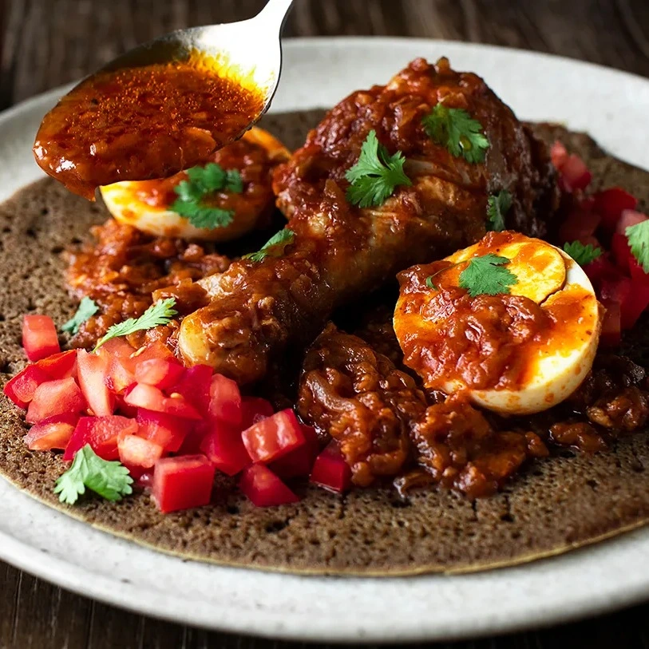
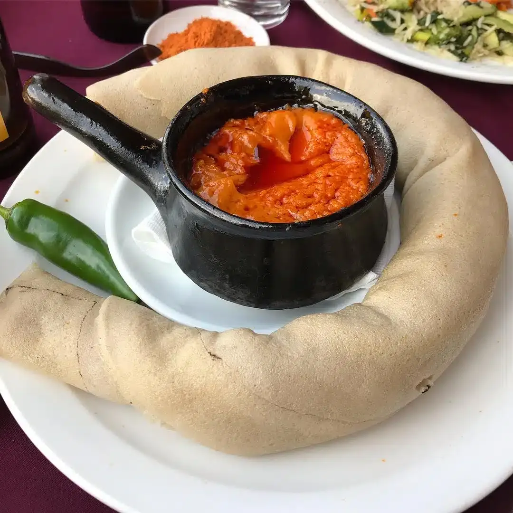
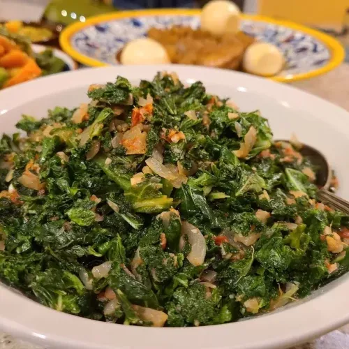

Discover Flavors, Delight in Every Bite!
ጣዕሞችን ያግኙ ፣ በእያንዳንዱ ጉርሻ ይደሰቱ!

Doro WatBold, spicy chicken stew with deep, smoky flavors and a rich,
velvety sauce. Discover
Misir WatRich, spicy, and comforting lentil stew with a satisfying
textureDiscover

Shiro WatCreamy, spiced chickpea stew with a rich, nutty flavor and
comforting texture.Discover

GomenMild, tender greens dish with a subtle, savory flavor and a hint of
earthy sweetnessDiscover